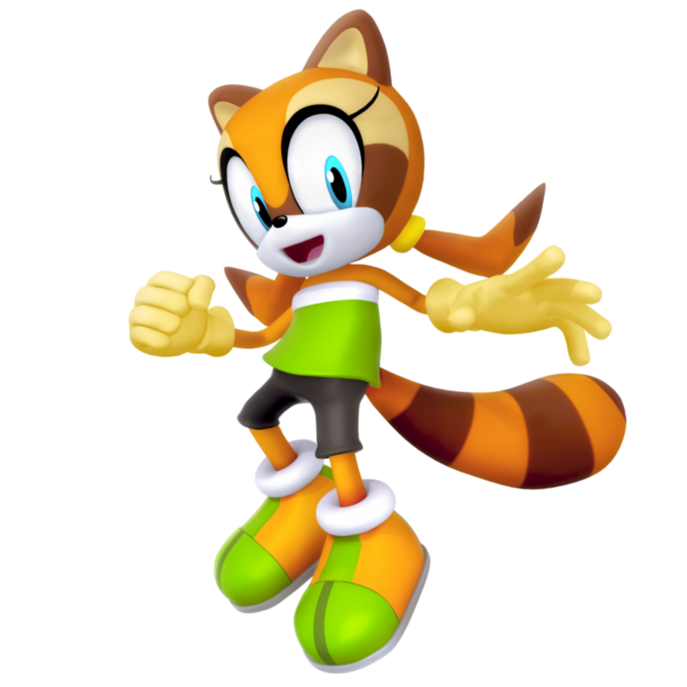

Aparência
Marine é uma guaxinim antropomórfica na cor laranja com várias listras e manchas/listras marrons. Seus olhos são rodeados por uma mancha mais clara amarela. Ela tem olhos azuis e seus cabelos são presos em duas marias-chiquinhas em formato de bumerangue. Marine veste um pequeno tomara-que-caia verde e usa shortinhos pretos e tênis verde com laranja. Ela veste luvas beges.
Personalidade
A guaxinim é uma garotinha enérgica, muito falastrona (sério, ela não para de falar) e que não gosta muito de ouvir os outros. Marine é uma aventureira nata, adora explorar e descobrir novas coisas, ela pensa que é experiente mas esquece que não sabe de tudo. Ela é muito valente e auto confiante, também adora fazer amizades.
